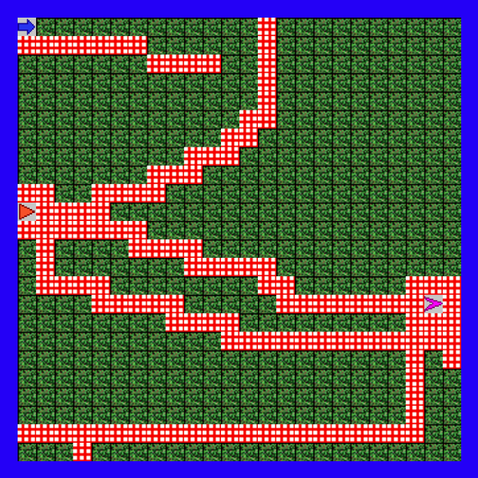

Week 5 Assignment - Jeroo Exercises 6 - 10
Open island 'Exercise9' and create 3 Jeroos at location (0, 0), (10,0) and (15, 22). The first Jeroo is allowed to start with 5 flowers only, the other two Jeroo's start with zero flowers! Avoid nets on island and have all Jeroos end up at the bottom LEFT corner of the island. Save source file as Exercise9.
Jeroo Exercise 9 Island
The assignment wanted me to free all the Jeroos and then have them end up in the bottom left corner. However, Jeroo #1 (Blue Arrow) spawned in with only 5 flowers. Almost any solution I tried required more than 5 flowers. So I tried breaking down this bigger task of getting all 3 Jeroos to the bottom left corner into 3 smaller tasks of getting each individual Jeroo to the bottom left corner with as few flowers as possible. I started with the Jeroo #1 (Blue Arrow) and I made it use one flower to put a hole in the line of nets. Then free Jeroo #2 (Red Triangle) and give a flower. I then made Jeroo #2 go through the hole in the nets (made by Jeroo #1) and then go and free Jeroo #3 (Pink Quadrilateral). I then made Jeroo #1 use it's three remaining flowers to get to the bottom left corner of the island. Then I made Jeroo #2 and Jeroo #3 follow the path made by Jeroo #1.